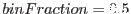
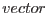
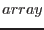
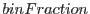

For  this gives the same result as median(). The algorithm is as follows: the values in  or  are sorted; that element index is identified which, expressed as a fraction of the total number of elements, comes nearest to ; finally, the element which occurs at that index of the sorted list is returned.
If is outside the range 0 to 1, the smallest or largest element, whichever is appropriate, is returned.
interface valueAtHistoFraction
real(single) function valueAtHistoFractionVector(vector, binFraction&
, maskVector)
real(single), intent(in) :: vector(:), binFraction
logical(bool), intent(in), optional :: maskVector(:)
end function valueAtHistoFractionVector
real(single) function valueAtHistoFractionArray(array, binFraction&
, maskArray)
real(single), intent(in) :: array(:,:), binFraction
logical(bool), intent(in), optional :: maskArray(:,:)
end function valueAtHistoFractionArray
end interface